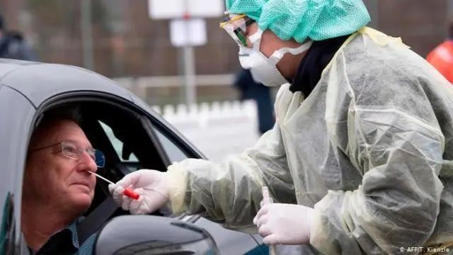

数说疫情0306：湖北非武汉地区首次零新增，美国感染数可能被低估
原文链接 备份链接 境外累计确诊病例即将超过2万。美国很可能有上千例潜在感染病例以及他们的密切接触者未能被及时发现和隔离，到目前为止，“我们看到的美国官方病例数字可能只是冰山一角”。 文 |《财经》数据研究员徐进 图 |《财经》 …
导言
岁末年初以来，新冠肺炎疫情蔓延全国。医护人员冲锋在前，病人的生死、同胞的安危，无不牵动着我们的心。近期，我们将陆续推出一系列文章、笔谈，围绕和此次疫情以及历史上类似公共危机相关的政治、经济、法律、文化的复杂成因及后果，进行分析和反思，也将尝试在古今中外相关的历史经验中，从人类曾经面临的各种灾难与危机中寻找镜鉴。
今天我们继续推送斯坦福大学社会学系教授周雪光老师对美国疫情发展所做的逐日记录。自3月4日起，周雪光老师决定每日发布文章，“跟踪记录一下自己经历到的美国有关疫情应对的过程。”我们征得周雪光老师的同意，在此分为数期予以转发。从中我们可以看到美国如何一步一步走入新冠病毒疫情的阴云笼罩之下，并以一种内部的眼光去观察政府与民众的应对；与此同时，透过作者的选择与点评，我们也能感受来自社会科学学者的比较制度研究的独特视角。在众声喧哗之下，这种清明的理性，正是我们所期许的。今天转发的，是其于2020年3月9-13日的记录。
周雪光教授为文研院学术委员，曾受邀主讲“跨学科视野下的制度研究”系列讲座。感谢他的授权发布。
3月9日·周一
一早收到CNN有关疫情的新闻要点。其中说道，自今天起CNN将Coronavirus爆发称之为Pandemic（全球大流行病）。文章特意说明，国际卫生组织与美国疾控中心尚未如此称谓，但许多专家认为已经如是。
一早Starbucks，见到两位咖啡友，问他们如何看专家建议的疫情期间保护措施，都说要小心，避免人群。但一位老兄还准备月底去纽约见女儿，他女儿打算那几天带孩子从伦敦飞到纽约看朋友。当然，他/她也知道这些旅行计划可能随疫情发展而取消。
晨4：40. 两位咖啡友走后一个小时里，居然整个咖啡店就我一人，加上两位店员，这寂静令人紧张。
校园的学生报纸Stanford Daily上刊登一位学生的“评论”专栏，其中提出，校园的服务员工对师生的健康和良好环境高度负责；但他们的奉献不应该以自己的安全为代价。这位学生是 Students for workers’ right 组织的成员，这个学生组织在过去几年里发起各种活动为校园里提供辅助服务的蓝领工人利益发声。
下午的星巴克有十几位顾客，排队时看着冷清的店面，无意间地叹了一口气。平时熟悉的一位女孩店员正在旁边拖地板，听到后关切地打招呼：“Oh, are you tired?” 我这才意识到自己的叹气，赶紧回答道：”Not tired but worried…”.
最近疫情期间，星巴克打扫卫生的频率大大提高，店员经常拿着扫把或抹布在打扫清洁，张张桌椅总是干干净净地，和以前颇有不同。
在这里碰到系里一位博士生，很优秀，马上毕业去哥伦比亚大学做助理教授。顺便聊了几句。这段时间经常碰到他在这里辛勤工作，看来已经进入了tenure-track的节奏。劝他小心，虽然这个病毒对年轻人不是那么凶狠，但一旦有染，需要自我隔离那么长时间也是件麻烦事。他用手势比划着自己的活动轨迹说，如果看一下每天的工作/生活轨迹，也就是那些单调固定的路线，和自我隔离也差不多。嗯，学者的生活之道仿佛就是自我隔离的日常实践。如此一想，倒是心宽了不少。
下午参加一个系里经济社会学和组织社会学每周一次的workshop，本学期的最后一次。这是第一次尝试网上授课软件Zoom。多亏一起参与的年轻同事，带动大家一起上手新技术，workshop效果也不错。不过，若正式上课，没有面对面的互动，视频上课效果可是令人忐忑。
湾区地方新闻：至尊公主号的3500余旅客中午在Orkland下船登陆，傍晚时分等待登机飞往他处。旧金山的某学校的家长检测阳性；学生放假，学校深度清洁。附近城市旧金山、SAN Jose 纷纷取消各种集体活动。UC Berkeley也改为全校网上授课。
读到美国一位公共卫生专家Dr. Scott Gottlieb的说法：美国已经过了“containment”阶段，现在进入了“mitigation”阶段，估计要持续两个月左右。天哪，难道这疫情日记还要持续这么长时间？
不过，这几天疫情的紧张气氛今天暂时让位给另一大新闻：美国股票市场大跌的黑色星期一，据说主要是对石油价格暴跌的反应；也是对疫情不确定性的忧虑。
山雨欲来风满楼。
当地时间3月8日，美国加利福尼亚州州长加文·纽瑟姆表示，“至尊公主号”将于当地时间9日停靠在奥克兰港，并安排所有乘客下船。目前，船上已有21人确诊感染新冠肺炎。美国乘客将优先下船并送往军事基地隔离，其他国家乘客则被要求乘坐包机回国。
3月10日·周二
清晨星巴克的人流似乎比昨天稠密了些，而且有一些新的面孔。仍然没有人戴口罩。
在教务处兼职的咖啡友透露说，今天学校要宣布，春季学期（三月底开始）的头两个星期是网上教学。不料，下午收到校长的公告说，全校春季学期仍然网上授课，直到进一步通知，并要求学生不要返校，以免校舍聚集传染。哈佛大学作出同样决定，并限学生在5日内离开校园。其他学校也有同样要求安排。
位于疫情最为严重的华盛顿州中的华盛顿大学通告说，校园已经测试的2300人中，有10%检测结果为阳性！
这个学期以来，通常周二是最忙的一天，除了上午旁听课程外，把与RA和研究合作的约会都集中在这一天，原定今天要见5个人，从9点到下午4点都排满了。但随着学校不鼓励聚会的精神，把这些约会一一取消或推迟，只有一个多小时的网上讨论。下午测试了一个明天网上讨论的新的视频软件。
由此想到，这次疫情会极大地推动远程视频、网上教学的新技术和实践，或许由此引发一个新的技术革命和发展方向，也未可知。时代演变轨迹因一个意外事件而发生重大改变的例子不在少数。
这几天看电视新闻，各路播音主持人或专家反复告知观众，一旦发现染疾后的做法：打电话给你的医生/诊所（health care provider）或当地的公共卫生机构；他们会安排你前往检查的地点时间。说完这些信息后，这些主持人或专家会加重语气、用命令口吻说道：“不要在未得到安排之前自行前往诊所；这样的话你会把病毒传染给其他人。”如此严肃的口吻在公共媒介上还不多见，从中窥见大家对维护公共空间，不侵害他人利益（健康）的态度立场。
这让我想起费孝通先生比较中西文化中“私域”与“公域”之间的区别。费老在1947年代《乡土中国》中这样写道：在中国文化中，人们保护私域，无视公域。“一说是公家的，差不多就是说大家可以占一点便宜的意思，有权利而没有义务了。”费老指出，中国文化中的群己界线如差序格局，边缘模糊，“这和西洋把权利和义务分得清清楚楚的社会，大异其趣。”或许这是一个比较分析的线索。
与此相关的阅读。朋友转来的德国华人病毒学家陆蒙吉教授“全面评说德国的防疫措施和风险”的访谈，从中了解到德国公共卫生系统状况，专业人员与政府官员之间关系，中德文化、政治与社会关系在防疫领域的比较。陆教授说：“在中国，大家都习惯了上面领导出来说话。在德国至今默克尔没有直接出来说话，华人感觉德国领导是不是不关心不重视？不是这样的。首先医疗是一门专业服务，不是政治家，而是需要专业人士来解决。…”访谈中详细介绍了德国政府公共卫生部门的具体行动，有许多关于中德在防疫方面的对照比较，很有意思。
当地晚间新闻中，疫情及其应对占据了主要内容。在旧金山，为了防止流浪者们的病毒传染，特意在他们集聚地安装了洗手池等清洁装置。很难想象这个举措的实际效果有多大。
CNN报道，至今美国975例确诊，30人死亡。许多城市都禁止了公共聚会的活动。

新华社柏林3月22日电：德国联邦与地方政府22日达成新协议，将进一步限制公共生活，遏制新冠肺炎疫情蔓延。德国总理默克尔因与新冠肺炎感染者有过接触，于当天开始居家隔离。
3月11日·周三
一早和咖啡友交谈。以前这位咖啡友是我了解时事的主要信息源，从国内到国际，从学术到体育。不过，最近这段时间我开始关心时事了，就发现咖啡友提供的信息不再那么新鲜了。
CNN newsletter 报道，纽约市的一英里见方的区域被隔离，National Guards 参与其中。其他各地，大都市、中小城市、公司、大学等等都实施各自的抗疫举措，如禁止大规模聚会。在类似公共卫生这一领域中，这种各自为政又颇为相似的传播模仿过程，可谓美国特色。各地差异很是明显。加州的许多小学已经取消上课，但其他地方的上课还是如常进行。在这一体制下，各地的多样性、灵活性充分体现出来了；代价是反应时间的迟滞不可避免。
参加一个关于疫情影响的线上交流，又涉及到了比较制度分析的课题。
收到斯坦福教授俱乐部“winemaker dinner”的通告，一周后举行，以前也经常有类似活动。不过，在这个时候还操持聚会，有点不合时宜吧。
读到一封来自意大利的呼吁信件（英文）：大规模爆发，医疗资源短缺，已经到了生死威胁关头。
“On Monday a doctor wrote in the paper that they have begun to have to decide who lives and who dies when the patients show up in the emergency room, like what is done in war. This will only get worse.”
傍晚听美国公共电台，专题节目上开始讨论和比较这次疫情与2008年金融危机对美国经济的影响，以及关于政府是否应该和何时出面救市、帮助企业，特别是中小企业和雇员等一系列问题。
电影演员Tom Hanks夫妇宣布病毒感染，另有NBA球员检测阳性，在美国给这个流行病安上了具体的人物面孔。
世界卫生组织宣布covid-19为大流行病（pandemic），以前读到的、听说的重大公共卫生事件终于发生在自己的经历中。不知为什么，2009年的H1N1流感大流行病居然毫无印象，似乎在公共领域也没有什么影响。这次疫情涉及面要大得多，公司、学校、社交场所都受到影响。
美国确诊人数超过千人，但确切数字难以找到，因为没有统一的收集渠道和标准。可以肯定的是，实际感染数字远高于已经确诊数字，因为检测手段还远没有普及。
打算暂停去星巴克了。

截至3月22日18时，意大利新冠肺炎确诊病例增至59138例，现存病例46638例，重症患者3000人。
3月12日· 周四
暂停去星巴克了，办公室、运动场所也有段时间没有光顾了。熟悉的世界突然缩小了许多了。早晨到附近山坡上走了5英里，试图建立新的routine.
一早读到Stanford Daily 报道，学校又有两例确诊，至今已有3人确诊。学校负责的部门是Environmental Health & Safety (EH&S 环境健康与安全办公室)。通知说，学校遵照CDC和当地公共卫生程序要求，在发现确诊案例后，通知与患者密切接触的人员。但为保护患者隐私，不会进一步披露患者信息。另外，从现在开始，有关信息发布走向常规，不再通过email向全校发送信息，而是每周工作日下午6时将更新信息放在“healthalerts.stanford.edu的网站上。师生也可以在网站上登记将更新信息直接发到自己的信箱。
所在“县”（Santa Clara County，主要是硅谷中心地区）公共卫生部门发布消息：已有48个确诊案例。美国行政区划中依序为：联邦-州-县-市。这里的“县”相当于国内的“地区”，下面才是大小不一的“市”，我们居住地附近的几个“市”，犹如中国的小镇规模。
中午，系里每月一次的教师会议在网上进行，十几位同事面孔在屏幕上排列，挺新鲜的。按照系主任的调侃，仿佛是好莱坞明星展示。有些投票不需要匿名的，在Zoom上刷刷显示，还有的投票按照规定是匿名的，则分别发email给系里行政人员。
下午趁外出理发机会，到附近超市买点东西，熙熙攘攘地人还是不少，不过感觉大家的购买量都不少，似乎是为今后的不测风险做准备。我前面的这位大妈在排队等待的时间里还跑了几个来回，多拿了许多货物。
从3.4开始记录观察，一周过去了。在这个防疫抗疫过程中，印象最为深刻的是信息流动。打开网站、电视、电台，报刊，各种不同的信息渠道，各种关于covid-19的讨论，来自各方专家的意见建议， 从个人防护、自我检查到对政府的批评指责，到对经济、政治、社会生活的影响。虽然大同小异，但来自不同的信息源，在一些专题讨论节目中，还会组织不同看法间的辩论。各方举措，学校、工作单位、保险公司、航空公司，到各地政府，不断出台，此起彼伏，各自为政又相互模仿呼应。
以前发生重大事件，也有类似信息爆炸的情形，但没有像这一次般同时涉及到不同地区千家万户的日常生活和工作，没有见到过各类工作单位和各地政府如此大规模地运动起来。也是一个新的体验和感受。
一周以来，工作/生活方式也发生了明显变化。常说选择到大学教学科研的职业就是选择了一个生活之道，因为这种工作不是八小时工作内外划分清楚的，而是占据了你的大部分生活。但也因此有了更多的自主性。比如说，除了必要的上课开会等集体活动，可以选择到咖啡店去工作，可以自由安排自己的工作常规，等等。本以为一直过着相对隔绝的学术生活，不会受到随covid-19而来的社交距离的困扰。不料当工作坊、各种约会取消，会议上线，连最为普通的坐咖啡店的机会也失去时，突然有了“社会隔离”之感。原以为那些三言两语、点头之交的社会互动很是表面性的（superficial），只是可有可无的社会礼节而已，这时才感到它们是社会生活的一个重要部分。
在美国社会、在学术生活中尚且如此，何况在社会交往密集的中国文化中呢。如此想来，因防疫而来的社交隔离，加上疫情威胁不确定性，因此而来的心理影响想来不容小觑。不知流行的信息技术在多大程度上缓和了这一问题？
根据网友推荐的“一亩三分地”网站信息，今天傍晚，1731例确诊，41例死亡。

疫情期间，微软公司上线了自己的工具。通过这一工具可查找全球每个国家和美国所有州的最新感染统计数据。该网站上的数据来自世界卫生组织、美国疾病预防控制中心、欧洲疾病预防控制中心以及维基百科。
3月13日·周五
忍不住，清晨到星巴克买了大杯咖啡，速去速回，没有停留。看到熟悉的店员，打了招呼后就离开，心里很是别扭，仿佛抛弃了他们的内疚感。
这让我想起两则故事。春节初一那天，我们家开party，邀了一些来访学生学者来晚饭庆祝。一位朋友是来自武汉协和医院的访问学者。那时我们只知道疫情发生，但不知道惨烈情况。这位医生说起，她的同事医生都在一线抢险，她在这里访学，心里很觉愧疚。那时，她已经在帮助武汉单位网上门诊咨询。另一个故事是间接听到的。一位教授告诉我，他的一位中国学生的父母春节前来到孩子这里访问。他们是来自武汉的医生，来前尚不知道疫情。疫情爆发后，他们在孩子家隔离14天，很是内疚在这个时候离开了医生岗位。为TA们的专业精神感动！
咖啡友通过email转发一个消息，马云基金会捐献50万检测剂（test kits）和一百万个口罩给美国。咖啡友开玩笑道，“莫非他想在美国竞选总统？得我一票”。
清晨，系里行政人员转来邮件，文理学院要求各行政机构，除非必需，全部转到网上办公；因此周一起，系办公室不再开门，都在网上办公。学院其他办公室，包括技术支持办公室也都做出相应安排。原本下周一东亚研究中心的一个steering committee会议，昨天还说面对面开会，午饭已订好，现在也改在网上了。
一小时后，接到通知，全校如此办理。这个局面和速度，前所未有！
这几天有关疫情的信息大爆炸，打开各种媒介，都是有关的信息；气氛一下子紧张起来，心情也收紧了许多。似乎可以体验到一个多月前国内各地民众的焦虑感受，以及来自国内朋友的防疫安全的提醒和督促。
中午打开电视，美国总统正召开新闻发布会，宣布“全国紧急状态”，以便动用资源应对疫情检测和隔离等措施。在这么长时间的后见之明后，还有如此大的错误，真是不可饶恕。但愿亡羊补牢，为时未晚。
在随后的问答中，有记者追问特朗普总统是否承认，联邦政府应对决策过晚，并承担责任。总统一口否认，归咎于现有体制限制了政府反应能力，反而自夸一番。推卸责任、邀功自赏大概是政客的本能吧！
傍晚的当地新闻上，美国居民开始抢购囤积以备危机了，各大超市（Costco，Safeway）都人满为患，购物车堆积如山。以前在电视、电影上看到的情景，如今发生在身边。
看来要做持久战的打算了。准备重新布置家里的环境，把工作地点扩展到几个不同角落和后院。
读到笔名“潜伏的木马君”写的文章“欧洲疫情爆发：雪崩之前，每一片雪花都在勇闯天涯”，谈中国与德国对待疫情应急举措的比较。感觉写的很到位，许多关于德国的评论也适用于美国社会，只是在美国，没有那么理性，更为散漫，再加上一个糟糕又自以为是的总统。
下午，校长通告：今天发生了第一个本科生确诊案例。新的一系列措施：(1) 冬季学期（下周是该学期的最后一周：考试周）的最后考试，学生可以选择不参加（optional），成绩按平时表现（work done up to now)确定。(2) 本科生不再使用食堂聚集用餐，领到份餐后自行寻找就餐地点，控制进入餐厅取饭的人数；（3）研究生使用食堂遵循同一原则，但鼓励研究生自己在宿舍做饭，以便保持社交距离。研究生住房不受影响。（4）春假和春季学期（下周以后），本科生不能使用学校宿舍。只允许极少数无处可去的本科生留住学生宿舍。要求学生在3月18号下午5点前离校。……
读到一段斯坦福学生关于网上上课的经历：
Our professor was 20 minutes into lecture before realizing 1. He wasn’t sharing his slides 2. He wasn’t recording the lecture 3. He had his computer muted so he couldn’t hear us 4. Wasn’t checking the chat and 5. Had his phone on silent so that TAs couldn’t get ahold of him. Hahaha
又读到一则母女对话：
Mom: Don’t’ repeatedly use the same face bask, especially those surgical masks.
Daughter: The people who need face masks are the people more at risk and working in hospitals. And ordinary young people like us buying up all the masks is causing a real shortage for people who need it. … You should continue to use yours, but we are okay
一亩三分地网站报道：至今天傍晚时分，确诊2282；死亡：48.
且看一个松散关联的社会，是如何应对危机的。一个观察思考的极好机会。

艾琳·皮斯朗普(Erin Peistrup)是西雅图西山小学学生家长，她有两个儿子，大儿子尼尔斯(Nils)今年12岁，小儿子安德斯(Anders)今年7岁。她每天要叫醒他们，吃早餐，准备上网课。
未完待续
延伸阅读
疫情下的省思 | 程乐松：黄昏永续——“虚假观察者”关于疫病的琐言
疫情下的省思 | 虞云国：宋代的流言与管控 ——读《宋代信息传播与管控：以流言为中心的考察》

责任编辑：崔 璨
原文链接 备份链接 境外累计确诊病例即将超过2万。美国很可能有上千例潜在感染病例以及他们的密切接触者未能被及时发现和隔离，到目前为止，“我们看到的美国官方病例数字可能只是冰山一角”。 文 |《财经》数据研究员徐进 图 |《财经》 …
原文链接 备份链接 国内多地周一重现早高峰。国际奥组委确认正式考虑延期举办东京奥运会。疫情令美国经济处在悬崖边缘。意大利对中国专家组的建议照单全收。 文 |《财经》数据研究员 徐进 图 |《财经》视觉中心 编辑 | 郝洲 一、国内多地 …
原文链接 备份链接 美国约翰斯•霍普金斯大学统计显示，截至当地时间21日13时，美国新冠肺炎确诊病例已超过2万例，死亡278例。三天之内，全美确诊病例从1万例增至2万例。而更有研究分析，美国疫情的峰值最早可能要到5月份才能到来。 美国确 …
原文链接 备份链接 体坛周报全媒体记者 季孟年 出生于1983年的后卫球员普尔·杰特已经在CBA效力多年，本赛季他是福建男篮的一员。就像其他的外援们一样，杰特在新冠疫情爆发之后选择回到了美国。如今，中国的疫情已经得到了有效的控制，CBA也 …
原文链接 备份链接 3月19日晚，央视《新闻1+1》连线中国红十字会志愿专家团队专家马学军。马学军介绍说，在伊朗有一个叫做“网络登记报告”的系统。“据了解，伊朗已经排查了2250万人，其中至少150万人有发热症状。也就是说，现在的伊朗疫 …